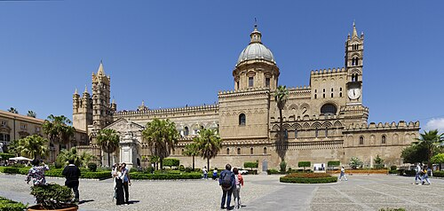
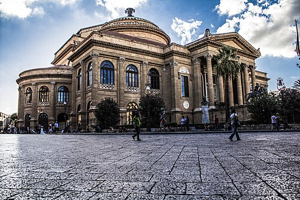
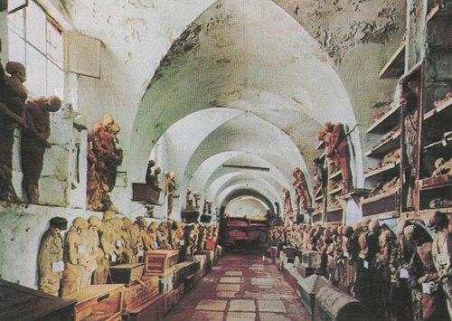

This map shows 20 of the most-searched sights in Palermo as photo spots, ranked by how often people search for them: Palermo Cathedral, Teatro Massimo, Capuchin Catacombs, Ballarò Market and Quattro Canti lead the list. Every spot has a pin on the subject and a phone icon showing where to stand, with tips for shooting it on your phone: which lens to use, how to frame it, a settings tip and the best time of day. Directions and Navigate buttons take you to the standing point on foot or by public transport. 3 spots are free to view; the full map is for members.
The 3 free photo spots
1Palermo Cathedral

Palermo Cathedral is a building that has been changed many times, and that is what makes it fun to photograph. The first church on the site was Byzantine, and the present one was begun in 1185 by Archbishop Walter Ophamil. The towers gained their upper levels in the 14th and 15th centuries. The Gothic-Catalan south porch dates from around 1465. The large dome and the neoclassical look come from work done between 1781 and 1801. From here you see the three apses, with their blind arches and geometric patterns that echo Monreale Cathedral. One guide describes this as the cathedral's most original part, and it is usually quieter than the front. The apse area belongs to the original 12th-century building, so you are looking at the oldest outside walls. Stand back, keep the verticals straight with the gridlines, and fill the frame with the pattern work. If you want the full facade as well, Piazza della Cattedrale shows the whole front with the domes and towers. Corso Vittorio Emanuele gives a view of the cathedral framed through the arch gate along the street.
Where it is: The cathedral stands in the old centre of Palermo, next to the Archbishop's Palace (now the Museo Diocesano). Corso Vittorio Emanuele gives a view of it through the arch gate.
Shooting it on your phone
Lens: Start with the default lens (1x) for the whole rear of the building. Switch to ultra-wide (0.5x) if the square is too tight to fit all three apses. Use telephoto (2x-5x, depending on your phone) for close-ups of the blind arches and patterns.
Where to stand: Stand in Piazza Sett'Angeli (rear of the cathedral, looking at the three apses). The rear of the building with its three apses and the blind-arch and geometric patterns that echo Monreale Cathedral. From here you look straight at the three apses and their blind-arch and geometric decoration, which echoes Monreale Cathedral.
Framing: Turn on gridlines and line the apses up with the vertical lines so the walls do not lean. Take one wide shot of all three apses, then a closer telephoto shot of the patterned stonework. For the full facade and domes, walk to Piazza della Cattedrale. Corso Vittorio Emanuele gives a street view through the arch gate.
Settings tip: Tap on the stonework to focus, then slide the exposure down a little so the pale sky does not wash out the detail. If you use ultra-wide, keep the phone level to avoid stretched edges.
Best time: Light in the morning is likely to suit the apses best. Early in the day is also quieter. Check the light on the day, as high walls can throw shade across the square.
2Teatro Massimo

Teatro Massimo is Palermo's grand opera house, and its front is made for a phone photo. A broad flight of steps leads up to a neoclassical facade of tall columns, with a big bronze group and a lion on each side. The architect, Giovan Battista Filippo Basile, took ideas from the Greek temples at Selinunte and Agrigento, and you can see that temple look in the portico. It is the largest theatre in Italy, and it was one of the biggest in Europe when it opened on 16 May 1897 with Verdi's Falstaff. Building began in 1874 and stopped for eight years along the way. The theatre later closed for repairs in 1974 and stayed shut until 1997. Film fans may know it from the closing scenes of The Godfather Part III.
The building is large and symmetrical, so the main job is to fit it all in. The open square in front gives you room to step back, and a few people or café tables in the foreground add a sense of scale. Once you have the full front, move closer and use zoom for the bronze lions, the sculpted groups and the column tops. Tour groups tend to gather on the main steps, so photograph the steps from the square rather than standing on them. For a quieter, more symmetrical view of the columns and statues, try the narrow Via Bara all'Olivella as an alternative.
Where it is: Teatro Massimo stands on Piazza Verdi in Palermo, Sicily, and the square is the open space in front of the theatre's main steps.
Shooting it on your phone
Lens: Start with the ultra-wide (0.5x) to get the whole facade and its columns in one frame. If the square is busy or the edges look stretched, switch to the default lens (1x) and step back. Use telephoto (2x-5x, depending on your phone) for the bronze lions and column details.
Where to stand: Stand in Piazza Giuseppe Verdi (centre of the square, facing the front facade). The full neoclassical front of the theatre with its column details, framed by the square and any pedestrians or café tables in front. Face the front of the theatre, which lies to the south-east. From here you see the full neoclassical front with its columns, framed by the square and any people or café tables in front.
Framing: Turn on gridlines and line a column or the central doorway up with the middle grid line so the building looks balanced. Keep the phone level and avoid tilting it upwards, or the columns will lean inwards. Leave a little square in the foreground. For a different take, try the quieter, symmetrical view down Via Bara all'Olivella.
Settings tip: Tap the facade to focus, then slide the exposure down a touch if the sky is bright, so the stonework keeps its detail. Take a few frames while people cross the square and pick the one with the best spacing.
Best time: About 45 minutes before sunset is suggested for the front. Sunset time changes with the season, so check the local time on the day.
3Catacombe dei Cappuccini

The Capuchin Catacombs are burial galleries beneath the Capuchin monastery in Palermo. The monks began digging crypts here in the 16th century, when their original cemetery ran out of room. In 1599 they mummified Brother Silvestro of Gubbio, a recently deceased friar, and placed him in the catacombs. Over the following centuries local families paid to have their relatives preserved here too, and the halls are arranged by group: men, women, children, priests, monks and professionals. The catacombs hold about 8,000 bodies, including 1,252 mummies counted in a 2011 census.
This is an unusual place to photograph, and the most important thing to know is that photography inside is officially prohibited. Prominent signs say so, and iron grilles keep visitors away from the bodies. Please respect that. The people here were real, and they include children. Treat the inside as somewhere to look and learn rather than to take pictures.
What you can do is take a record of the visit from outside: the approach, the monastery frontage and the entrance area, which help you remember the day. Keep the phone away once you go through the door, and follow any instructions from the staff. If you want to know more about the people buried here, the history is well documented, including a scientific study of the mummies that began in 2007. Opening times and entry rules can change, so check the official site before you go.
Where it is: In Palermo, Sicily, underneath the city's Capuchin monastery.
Shooting it on your phone
Lens: Outside only: use the default lens (1x) for the entrance and frontage. Switch to the ultra-wide (0.5x) if you are close to the building and want it all in the frame.
Where to stand: Stand right at the subject: the phone icon on the map marks the spot. Stay outside the building to take your photos, and step back a little so the whole frontage fits in.
Framing: Turn on gridlines and keep the building's vertical lines straight. Include a little of the surroundings to show where you are. Photograph the exterior only, and keep other visitors out of shot where you can.
Settings tip: Tap the building to set focus, then drag the exposure slider down slightly if the sky is bright, so the walls don't wash out. Switch the phone to silent and keep it away inside, where photography is prohibited.
Best time: Daytime, when the outside light is clear and the entrance is easy to see. Earlier in the day is likely to be quieter.
17 more spots for members
These spots are on the map as grey numbered pins. Where to stand, the phone tips, photos and directions for them come with Explorer membership.
- 4Ballarò · members
- 5Quattro Canti · members
- 6Cappella Palatina · members
- 7Palazzo dei Normanni · members
- 8Fontana Pretoria · members
- 9La Vucciria market · members
- 10Teatro Politeama · members
- 11Piazza Marina · members
- 12Church of Santa Maria dell'Ammiraglio · members
- 13Palazzo Chiaramonte · members
- 14Santa Caterina, Palermo · members
- 15Zisa, Palermo · members
- 16Church of the Gesù, Palermo · members
- 17San Giovanni degli Eremiti · members
- 18Church of San Cataldo · members
- 19Cuba Palace · members
- 20Oratory of San Lorenzo · members
Get every spot with Explorer membership
Explorer opens every spot on every map in the library: where to stand, how to frame it on your phone and how to get there, plus the Xdatrys Maps app with maps saved on your phone for use without signal. $9.99 a month or $59.99 a year; cancel any time.
Join Explorer Compare free and Explorer
Not ready to join?
Get Pocket Lens, our free daily smartphone travel photography newsletter.
Free, and you can unsubscribe at any time. If the form does not show, sign up on our newsletter page.
Questions
What are the top photo spots in Palermo?
The first three on this map are Palermo Cathedral, Teatro Massimo and Capuchin Catacombs. They are ranked by how often people search for them. The full map has 20.
Where should I stand to photograph Palermo Cathedral?
Stand in Piazza Sett'Angeli (rear of the cathedral, looking at the three apses). Start with the default lens (1x) for the whole rear of the building.
When is the best time to photograph Teatro Massimo?
About 45 minutes before sunset is suggested for the front. Sunset time changes with the season, so check the local time on the day.
How do I get to the Capuchin Catacombs?
No Underground, train or tram stops are listed for this spot, so start from the centre of Palermo and go by taxi or hired scooter to the Capuchin monastery.
Credits
Map data © OpenStreetMap contributors (ODbL); base map built with Protomaps from OpenStreetMap data. Photos from Wikimedia Commons, credited under each photo with their licence. Background reading for the free spots: Palermo Cathedral, Teatro Massimo, Catacombe dei Cappuccini (Wikipedia, CC BY-SA). Access rules and opening times change: check before you go.